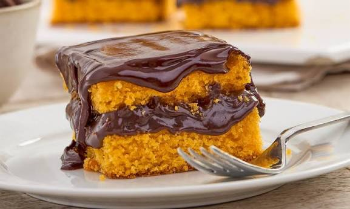

Bolo de cenoura

Ingredientes (8 porções)
Massa
- 3 cenouras raladas
- 4 ovos
- 1 copo de óleo
- 2 copos de açúcar
- 2 copos de farinha de trigo
- 1 colher de fermento em pó
Cobertura
- 3 colheres de chocolate em pó
- 3 colheres de açúcar
- 1 colher de manteiga
- 5 colheres de leite
Modo de preparo
- Bata a cenoura, os ovos e o óleo no liquidificador.
- Junte o açúcar e bata mais um pouco.
- Misture a farinha e o fermento com uma colher.
- Coloque na forma untada.
- Asse por 40 minutos.
- Para a cobertura, leve tudo ao fogo até engrossar e jogue em cima do bolo.
Entre no site da Unifil e procure o curso onde eu aprendi a fazer esse site.
Voltar para a lista de receitas